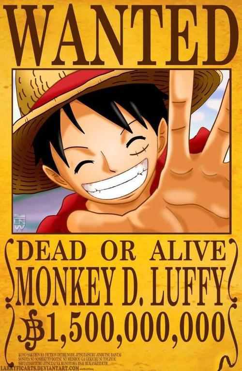

路飞：我要成为海贼王
索隆：我要成为世界第一剑豪
乔巴：我要成为万能药
山治：我要找到all blue
娜美：我要绘制世界地图
乌索普：我要成为勇敢的海上战士
罗宾：我要找到真正的历史正文
弗兰奇：我想看到自己制造的船.达到世界的尽头
甚平：我是要成为海贼王船员的人
创作海贼故事是尾田荣一郎长久以来的梦想，他小时候一直很好奇为什么没有什么漫画以海贼为主题，他顶多只知道有《北海小英雄》这部动画。他认为男孩长到某个年纪后应该就会想要出海寻宝才对。尾田从小就很想看海贼的漫画，那个时候他对自己说，如果要自己画的话，那就一定会画海贼的故事。不管作品卖不卖得掉，他都是作好了心理准备才会这么选择的，纯粹就是他自己想看而已。
尾田荣一郎在初一时，第一次画了海贼漫画，而尾田对孩子冒险所抱着的想象太丰富，就一本笔记本也画不完。他认识到用“一期完”的形式来画海贼漫画是不可能的，于是他决定要在《少年JUMP》上连载海贼漫画.
1997年，尾田荣一郎创作了海贼漫画《Romance Dawn》，这部一话完结的短篇漫画正是《航海王》的创作原型，后来这个名字还被《航海王》第一话作为副标题使用。当然，虽然两部漫画的主人公都叫路飞，性格却判若两人，剧情也并不相同。
然而，《Romance Dawn》最初因页数关系没法《少年JUMP》里刊登，于是他将《Romance Dawn》的内容删减，用“一期完”的形式在《少年JUMP》的本志和增刊上刊载了它，因为尾田当时已经决定将《Romance Dawn》作为《航海王》的雏形，他也准备以《航海王》的形式书写另一个版本的《Romance Dawn》。怀着两部海贼漫画，尾田荣一郎辞去了和月伸宏的《浪客剑心》助理一职，向连载方面发展。